00:05我们来看一些能让梯度下降工作得好得多的技巧。
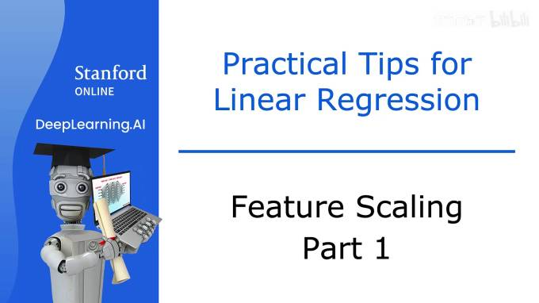
00:09本视频你会看到一个叫做特征缩放的技术，它将使梯度下降运行得快得多。
00:16让我们先来看看一个特征的大小，也就是该特征数字的大小，与其相关参数大小之间的关系。
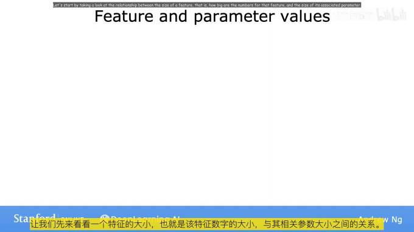
00:27举一个具体的例子，我们用两个特征来预测房价，x 一是房屋的面积，x 二是卧室的数量。
00:38假设 x 一通常的范围是从三百到两千平方英尺，而数据集中的 x 二范围是从零到五间卧室。
00:49所以，在这个例子中，x 一取值的范围相对较大，而 x 二取值的范围相对较小。
00:58现在，让我们以一栋房子为例，其面积为两千平方英尺，有五间卧室，价格为五十万，即五十万美。
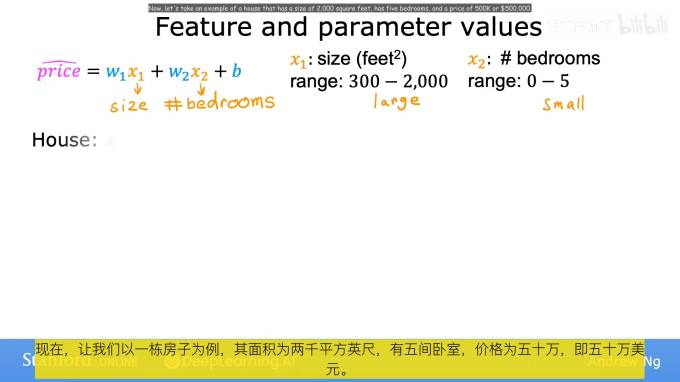
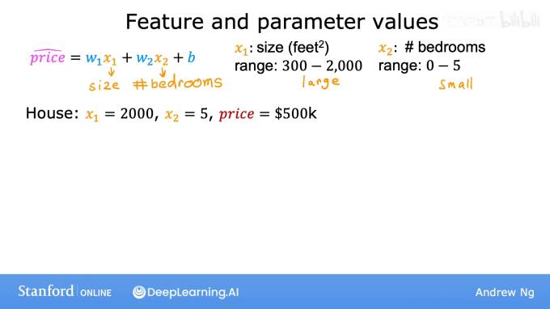
01:12对于这一个训练样本，你认为参数 W 一和 W 二的合理取值是多少？
01:21嗯，我们来看一种可能的参数设置。
01:25为了讨论方便，假设 W 一是五十，W 二是零点一，B 是五十。
01:36那么，在这种情况下，以千美元为单位的预测价格是这里的十万，加上零点五千，再加五十千，也就是略高于亿美元。
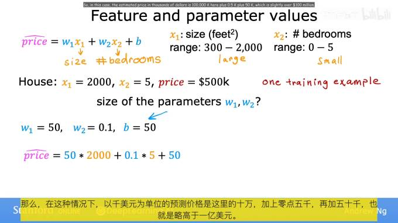
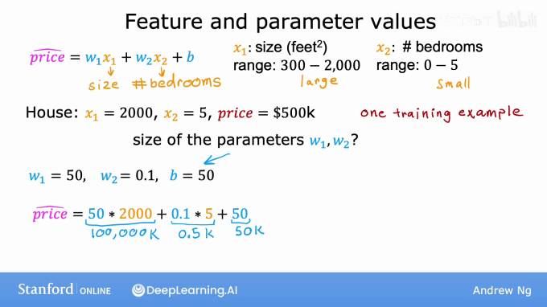
01:52所以，这显然和实际价格五十万美元相去甚远。
01:59因此，这对于 W 一和 W 二来说并不是一组很好的参数选择。
02:06现在，我们来看另一种可能性。
02:08假设 W 一和 W 二的值互换。
02:13W 一是零点一，W 二是五十，而 B 依然是五十。
02:19在这种 W 一和 W 二的选择下，W 一相对较小，而 W 二相对较大，五十要比零点一人得多。
02:30那么，这里预测的价格是零点一乘以两千，加五十乘以五，再加五十。
02:40第一项变成二十万，第二项变成二十五万，然后再加上五万。
02:48所以这个版本的模型预测的价格是五十万美元，这是一个合理得多的估计，并且它恰好与房子的真实价格相同。
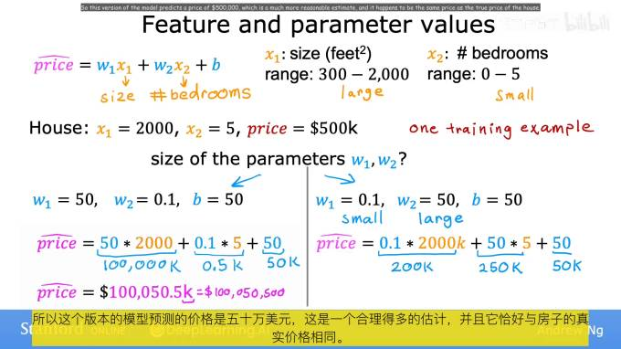
02:59所以你可能注意到，当一个特征的可能取值范围很大时，比如面积，最高能到两千，一个好的模型更可能会学习选择一个相对较小的参数值，比如零点一。
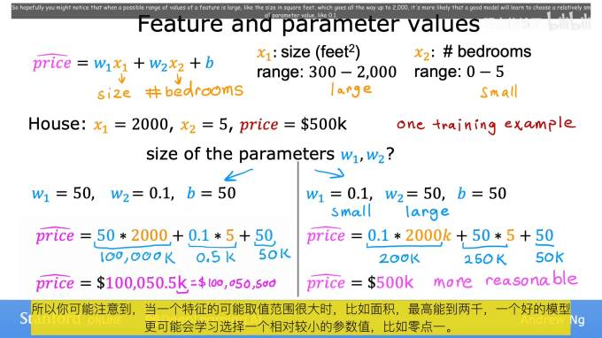
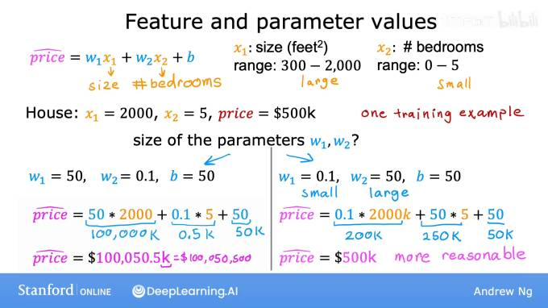
03:17同样地，当一个特征的可能取值很小时，比如卧室数量，那么其参数的合理值将是相对较大的，比。
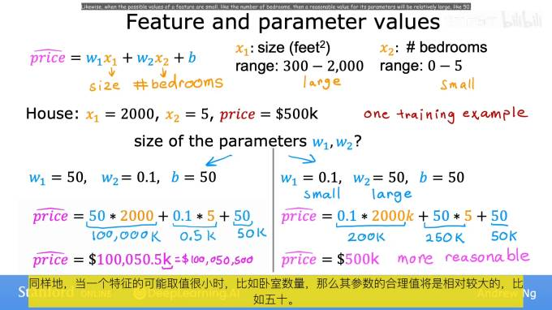
03:29那么，这与梯度下降有什么关系呢？
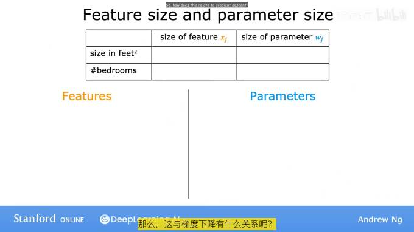
03:32嗯，我们来看看一个特征的散点图，横轴是面积，即 x 一，纵轴是卧室数量，即 x 二。
03:47如果你画出训练数据，你会注意到横轴的尺度或取值范围相比于纵轴要大得多。
03:57接下来，我们看看代价函数在等高线图中会是什么样子。
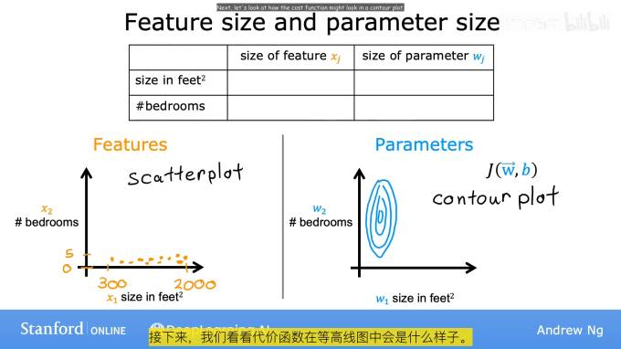
04:04你可能会看到一个等高线图，其横轴的范围要窄得多，比如在零到一之间，而纵轴取的值要大得多比如在+到一百之间。
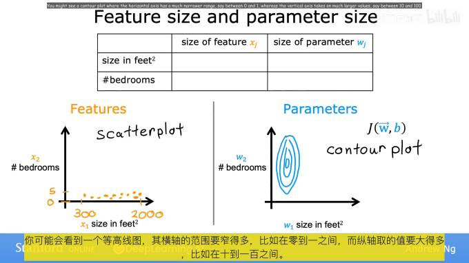
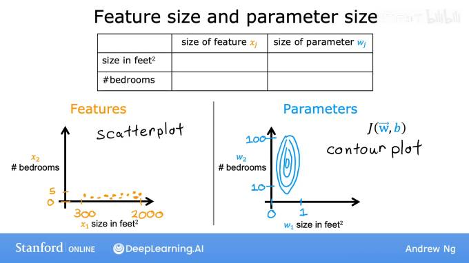
04:19因此，这些等高线形成了椭圆形状，它们一边短而另一边长。
04:26这是因为，对 W 一的微小改变能对估计价格产生非常大的影响，进而对代价产生非常大的影响，因为 W 一往往会乘以一个非常大的数字面积。
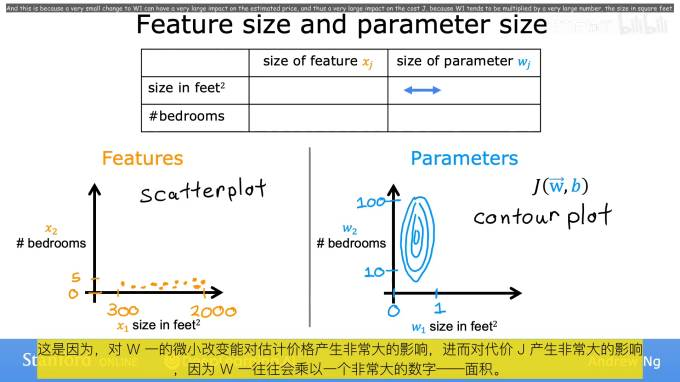
04:44相反，需要很大的改变 W 二才能较多地改变预测值，因此对 W 二的微小改变几乎不会对代价函数产生那么大影响。
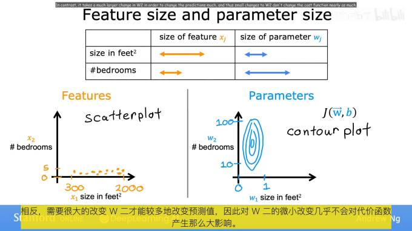
04:57那么，这会导致什么结果呢？
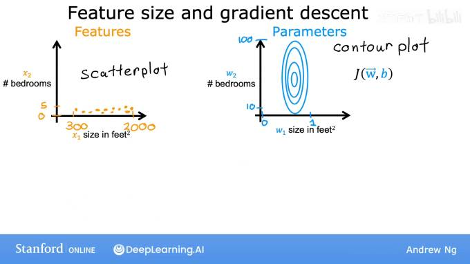
04:59如果你直接使用原始训练数据运行梯度下降，就可能会最终发生这种情况。
05:07因为这些等高线又高又瘦，梯度下降可能最终会来回反弹很长时间，才能最终找到通往全局最小值。
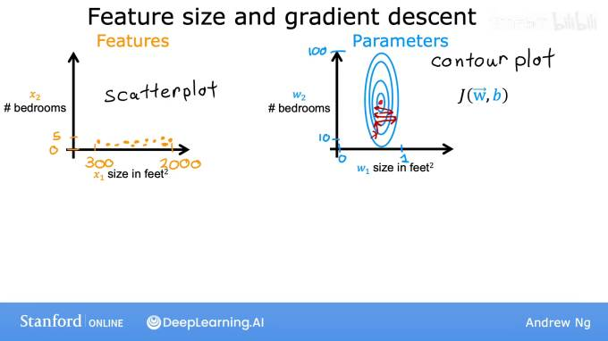
05:20在这样的情况下，做一件有用的事就是缩放特征。
05:25这意味着对你的训练数据进行某种变换，使得 x 一，比如，现在范围变为零到一，而 x 二的范围也变为零到一。
05:38所以，数据点现在看起来更像这样，你可能注意到底部图的尺度现在与顶部图的相当不同。
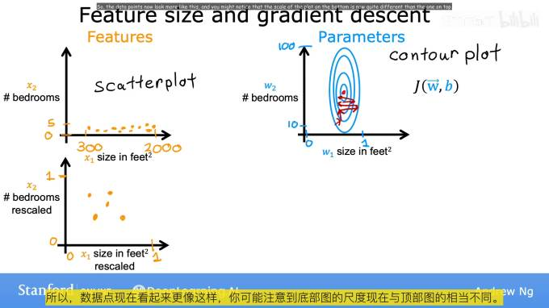
05:48关键点在于，重新缩放后的 x 一和 x 二现在彼此处于可比较的取值范围了。
05:57如果你在使用这个变换后的数据、在基于重新缩放后的 x 一和 x 二定义的代价函数上运行梯度下降。
06:06那么等高线将看起来更像这样，更接近圆形，而不是又高又瘦，而梯度下降可以找到一条更直接的路径通往全局最小值。
06:19所以总结一下，当你有不同特征，其取值范围差异很大时，可能会导致梯度下降运行缓慢。
06:28但重新缩放不同的特征，使它们都处于可比较的取值范围，可以显著加快梯度下降的速度。
06:36你实际上如何做到这一点呢？
06:39让我们在下一个视频中看一看。